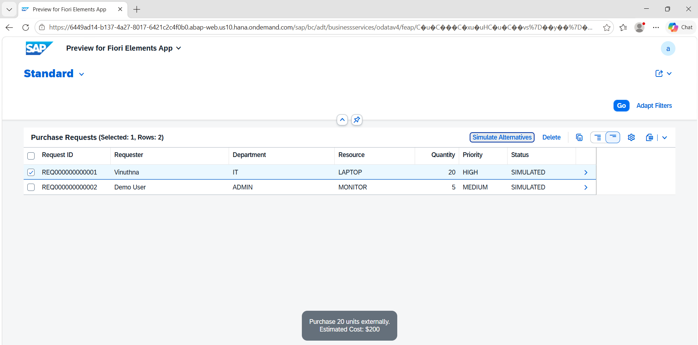
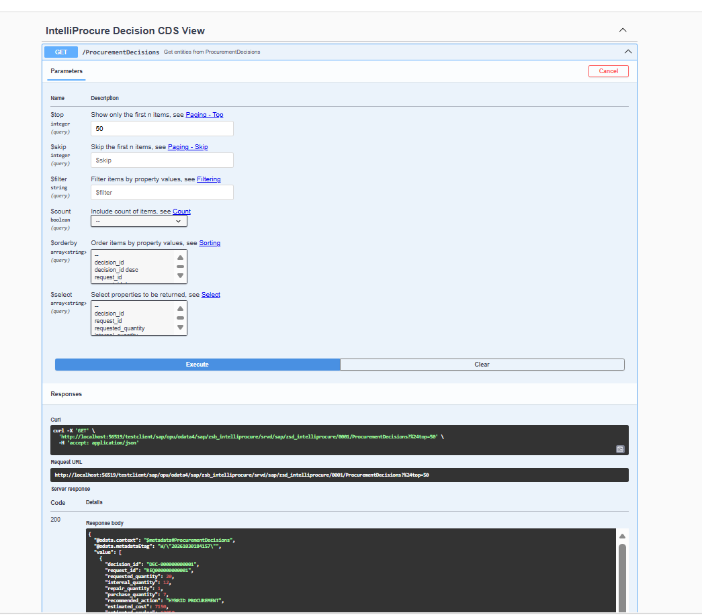
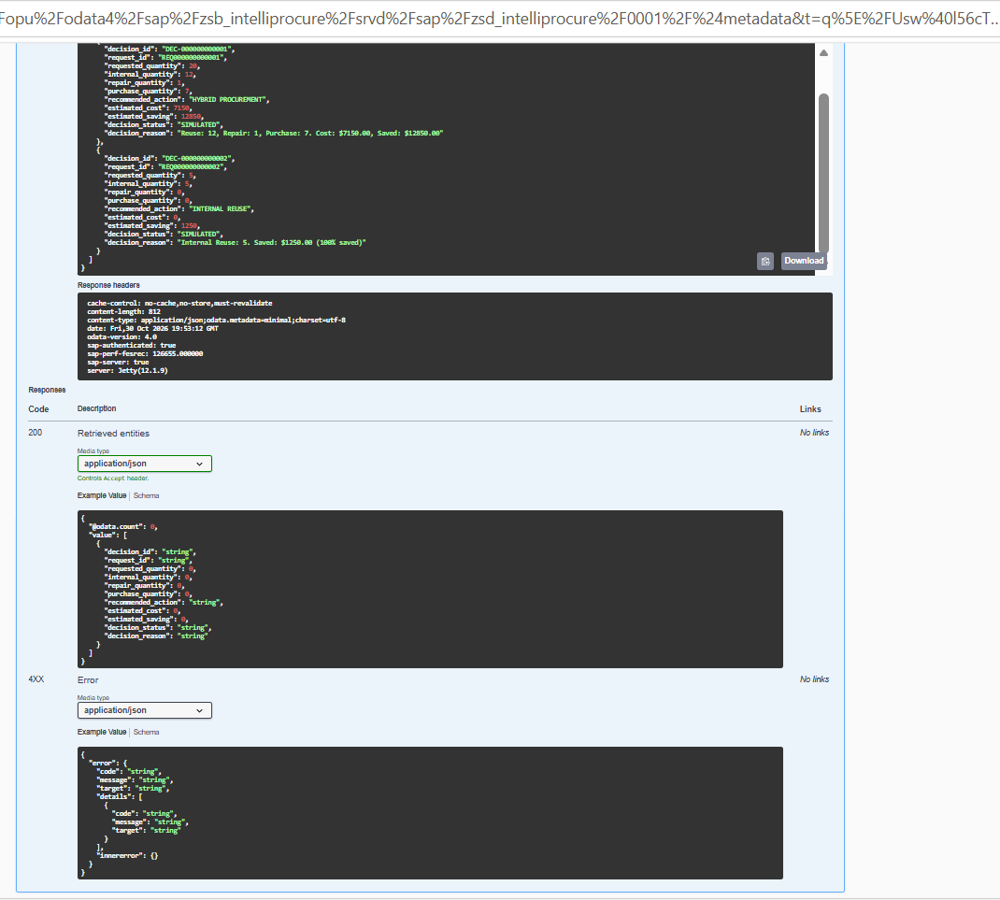

Project Overview
IntelliProcure is a smart procurement solution designed to reduce unnecessary external purchases by checking internal resource availability and repair opportunities before recommending new purchases.
How It Works
- Check available internal resources.
- Identify reusable resources.
- Evaluate repair opportunities.
- Calculate the remaining purchase quantity.
- Estimate procurement cost and savings.
Technologies Used
SAP BTP ABAP Environment, ABAP, CDS Views, RAP, OData V4, SAP Fiori Elements and Eclipse ADT.
Application Screenshots
Fiori Purchase Requests

OData Procurement Decisions API

OData API Response

Project Resources
Read Full DocumentationView Source Repository